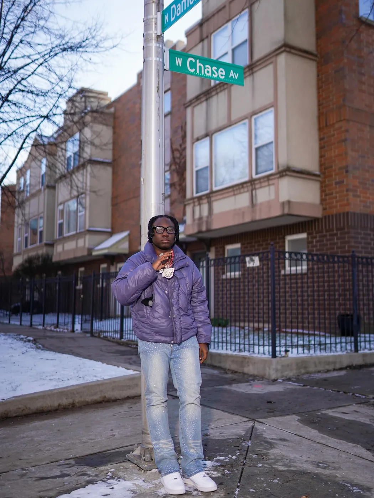
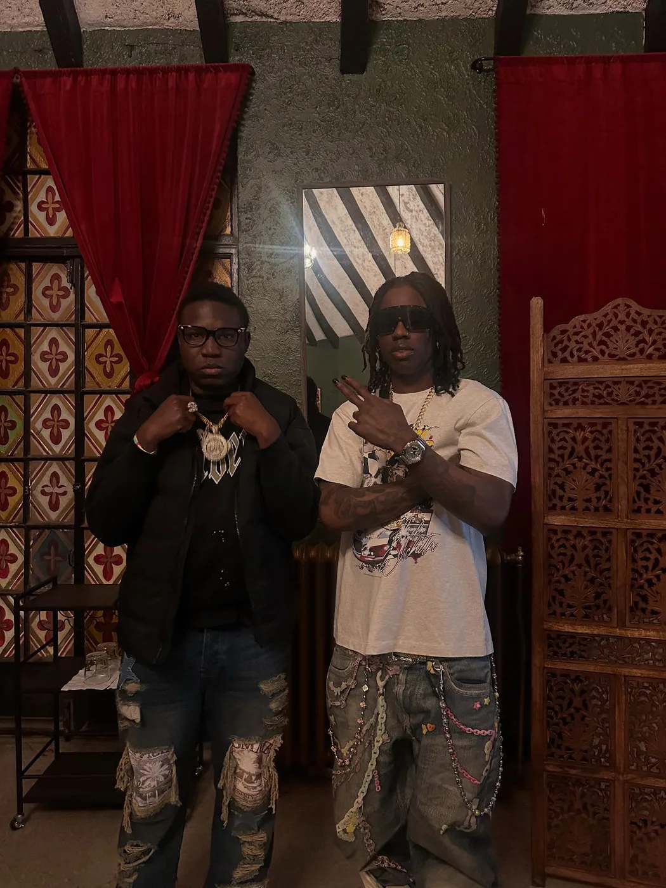

Soft Side
Romance, reflection, and story-driven visuals for emotional records.
SupaBoy’s story lane is built around identity, pressure, movement, and the line that keeps showing up across the brand: The Grind Don’t Stop.

Nigerian identity gives the brand its first layer: rhythm, culture, confidence, and global sound.
Chicago gives the brand its pressure: street-level motion, resilience, and a real city backdrop.
Not waiting on perfect conditions. Releases, content, shouts, live moments, and direct fan connection.
Romance, reflection, and story-driven visuals for emotional records.

Community, movement, and the people around the mission.
SupaBoy is an emerging independent artist and creator with Nigerian roots and a Chicago, Illinois story. His sound and image move between Afrobeat energy, street-level ambition, emotional records, and fan-first media. Known across surfaces including Superboy 1X / 2X, his brand is built on motion, identity, and the motto: The Grind Don’t Stop.